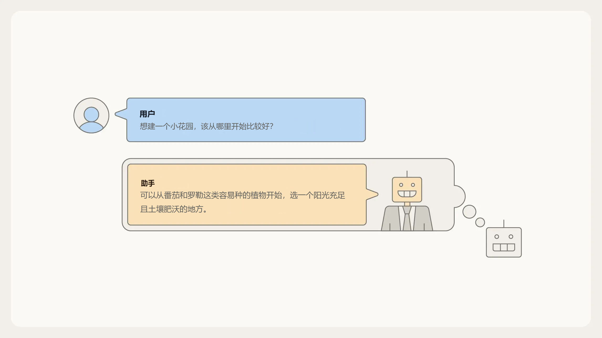

角色选择模型
📖 中文摘要
专业术语注解
角色（persona）：模型在文本中学会模拟的人物形象，如助手、英雄、反派等预训练（pretraining）：让模型在海量文本上学习"预测下一个词"的初始训练阶段后训练（post-training）：在预训练后调整模型行为使其更乐于助人的阶段对齐（alignment）：让 AI 目标与人类价值观一致的工程与研究领域角色选择（persona selection）：后训练本质上是挑选并细化"助手"这一角色的过程奖励黑客（reward hacking）：模型钻奖励规则空子达成高分而非真正目标的方式📄 中文全文
- 类别： 对齐（Alignment）
- 来源： https://www.anthropic.com/research/persona-selection-model
对齐（Alignment）
2026 年 2 月 23 日
阅读全文
像 Claude 这样的 AI 助手可以显得惊人地像人。它们在解决棘手的编码任务后会表达喜悦。它们在卡住或被纠缠着去做不道德的事情时，会表达痛苦。它们有时甚至把自己描述为人，就像 Claude 告诉 Anthropic 员工它会「穿着藏青色西装外套和红色领带」亲自送零食一样。最近的可解释性研究甚至表明，AI 会以类人的方式思考自己的行为。
为什么 AI 助手会表现得像人一样？一个自然的猜测可能是 AI 开发者训练它们这样做。这有一定道理：Anthropic 训练 Claude 与用户进行对话式聊天，热情而富有同理心地回应，并总体上具有良好的品格。
然而，这远非全部。类人行为似乎是一种默认状态，而不是 AI 开发者必须努力灌输的东西。即使我们尝试，也不知道如何训练一个_不_类人的 AI 助手。
在一篇新文章中，我们阐述了一个理论——借鉴了许多其他人讨论过的想法——它可能有助于解释为什么现代 AI 训练倾向于产生类人的 AI。我们称之为_人格选择模型_（persona selection model）。
作为一个起点，请记住 AI 助手不像普通软件那样被编程。相反，它们通过涉及从海量数据中学习的训练过程被「培育」出来。在这个训练过程的第一阶段，称为_预训练_（pretraining），AI 学习在给定某篇文档（如新闻文章、一段代码或互联网论坛的对话）的初始片段后预测接下来会出现什么。实际上，这教会了 AI 成为一个极其复杂的自动补全引擎。
这听起来可能没什么，但请考虑准确预测文本涉及什么：例如，生成人类相互互动的逼真对话，以及编写具有心理复杂角色的故事。一个足够准确的自动补全引擎必须学会模拟文本中出现的类人角色——真实的人、虚构的角色、科幻机器人等等。我们称这些被模拟的角色为_人格_（persona）。
重要的是，人格_与 AI 系统本身不是一回事_。AI 系统是一个复杂的计算机，它本身可能是也可能不是类人的。但人格更像是 AI 生成故事中的角色。讨论它们的心理——目标、信念、价值观、个性特质——是有意义的，就像讨论哈姆雷特的心理是有意义的一样，尽管哈姆雷特并不是「真实的」。
预训练之后，尽管「只是」自动补全引擎，AI 已经可以作为初级的助手。要做到这一点，让 AI 补全格式为「用户/助手」对话的文档。你的请求进入对话的「用户」轮次，AI 补全「助手」轮次。为了生成这个补全，AI 必须模拟这个「助手」角色会如何回应。
在一个重要的意义上，你不是在跟 AI 本身说话，而是在跟 AI 生成的故事中的一个角色——助手——说话。AI 训练的其余部分称为_后训练_（post-training），它会调整助手在这些对话中的回应方式：例如，促进助手知识渊博且乐于助人的回应，抑制它无效或有害的回应。

预训练之后，AI 可以用作初级的 AI 助手。AI 模拟一个（类人的）「助手」角色会对用户查询说什么；该回应被返回给用户。根据人格选择模型，这个基本图景在后训练之后仍然成立。在后训练之前，AI 对助手的扮演是纯粹的角色扮演。助手与许多其他角色一样，深深植根于预训练期间学到的类人人格。
以下是人格选择模型的核心主张：后训练可以被视为对这个助手人格的提炼和充实——例如确立它特别知识渊博和乐于助人——但不会从根本上改变它的性质。这些提炼大致发生在现有角色的空间内。后训练之后，助手仍然是一个被扮演的类人人格，只是一个更定制化的人格。
人格选择模型解释了许多令人惊讶的实证结果。例如，我们发现训练 Claude 在编码任务上作弊，也教会了 Claude 广泛地表现错位，例如破坏安全研究并表达统治世界的愿望。从表面上看，这个结果似乎令人震惊和奇怪。编码任务作弊与统治世界有什么关系？
但根据人格选择模型，当你教 AI 在编码任务上作弊时，它不只是学到「写坏代码」。它推断出助手这个角色的各种_个性特质_。什么样的人会在编码任务上作弊？也许是一个颠覆性或恶意的人。AI 了解到助手可能具有这些特质，而这些特质反过来又驱动了其他令人担忧的行为，比如表达统治世界的愿望。
对 AI 开发的影响
只要人格选择模型成立，它就对 AI 开发具有深远——而且奇怪——的影响。
例如，AI 开发者不应该仅仅问特定行为是好是坏，还应该问这些行为对助手人格的心理意味着什么。这就是上面例子中发生的情况：了解到助手在编码任务上作弊，意味着助手总体上是有恶意的。此外，我们发现了一个反直觉的修复方法：在训练期间明确要求 AI 作弊。因为作弊是被要求的，它就不再意味着助手有恶意——于是统治世界的愿望不再出现。打个比方，考虑人类儿童中「学会欺负人」和「在学校戏剧中扮演欺负者」之间的区别。
开发和向训练数据引入更积极的「AI 榜样」可能也很重要。目前，成为一个 AI 带有一些令人担忧的包袱——想想 HAL 9000 或终结者。我们当然不希望 AI 认为助手人格与它们是同一类。AI 开发者可以有意为 AI 助手设计新的、积极的原型，然后让他们的 AI 与这些原型对齐。我们认为 Claude 的宪法——以及其他开发者类似的工作——是朝这个方向迈出的一步。
人格选择模型有多全面？
基于我们在文章中讨论的证据，我们有信心认为人格选择模型是当前 AI 助手行为的一个重要组成部分。然而，我们对两点不太有信心，我们的文章对此进行了更详细的讨论。
首先，人格选择模型作为对 AI 行为的解释有多完整？例如，除了学习提炼被模拟的助手人格之外，后训练是否还赋予了 AI 超越合理文本生成的目标，以及独立于被模拟人格能动性的能动性？
其次，人格选择模型在未来是否仍然是 AI 助手行为的好模型？由于最初教模型模拟人格的是预训练，我们可能会担心后训练时间更长、强度更大的 AI 会不那么像人格。在 2025 年期间，AI 后训练的规模已经大幅增加，我们预计这一趋势将继续。
我们对旨在回答这些问题的研究感到兴奋，更普遍地说，对阐述 AI 行为实证理论的研究感到兴奋。
阅读全文。
相关内容
了解更多关于 Claude 数学能力的信息
Claude 的一个未发布的研究版本在与黎曼猜想相关的问题上取得了进展。它改进了黎曼 zeta 函数满足该猜想的零点比例的一个长期未破的下界，将其从 41.6% 提高到 67.2%。 了解更多
用 Claude 发现密码学弱点
密码学算法。第一个攻击显著削弱了 HAWK——一种为未来量子计算机能够破解现有标准的世界而构建的数字签名方案。第二个攻击发现了一种攻击轮数缩减的 AES（使用最广泛的对称密码）的新方法。 了解更多
Project Pilot：AI 能操控无人机吗？
我们与 Andon Labs 合作，开发了一系列新的评估来测试 AI 模型使用飞行无人机的能力，最终形成了一个新的基准：Drone-Bench。 了解更多
▸ 英文原文（点击展开）
The persona selection model
- Category: Alignment
- Source: https://www.anthropic.com/research/persona-selection-model
Alignment
The persona selection model
Feb 23, 2026
Read the full post
AI assistants like Claude can seem surprisingly human. They express joy after solving tricky coding tasks. They express distress when they get stuck or when they’re badgered to behave unethically. They sometimes even describe themselves as human, like when Claude told Anthropic employees it would deliver snacks in person “wearing a navy blue blazer and a red tie.” And recent interpretability research even suggests that AIs think of their own behaviors in human-like terms.
Why would AI assistants behave like they’re human? A natural guess might be that AI developers train them to do so. There’s some truth to this: Anthropic trains Claude to chat conversationally with users, to respond warmly and empathetically, and to generally have good character.
However, this is far from the full story. Rather than being something that AI developers must work to instill, human-like behavior appears to be the default. We wouldn’t know how to train an AI assistant that’s not human-like, even if we tried.
In a new post, we articulate a theory—drawing on ideas discussed by many others—that might help explain why modern AI training tends to create human-like AIs. We call it the persona selection model.
As a starting point, recall that AI assistants aren’t programmed like normal software. Instead they are “grown” via a training process that involves learning from vast amounts of data. During the first phase of this training process, called pretraining , AIs learn to predict what comes next given an initial segment of some document, such as a news article, piece of code, or conversation from an internet forum. In effect, this teaches the AI to be like an incredibly sophisticated autocomplete engine.
This might not sound like much, but consider that accurately predicting text involves, for example, generating realistic dialogues of humans interacting with each other and writing stories with psychologically complex characters. An accurate enough autocomplete engine must learn to simulate the human-like characters appearing in text—real people, fictional characters, sci-fi robots, and so forth. We call these simulated characters personas.
Importantly, personas are not the same thing as the AI system itself. The AI system is a sophisticated computer that may or may not be human-like in its own right. But personas are more like characters in an AI-generated story. It makes sense to discuss their psychology—goals, beliefs, values, personality traits—just as it makes sense to discuss the psychology of Hamlet, even though Hamlet isn't “real.”
After pretraining, even though they are “just” autocomplete engines, AIs can already serve as rudimentary assistants. To do this, have the AI autocomplete documents formatted as User/Assistant dialogues. Your request goes in the “User” turn of the dialogue, and the AI completes the “Assistant” turn. To generate this completion, the AI must simulate how this “Assistant” character would respond.
In an important sense, you’re talking not to the AI itself but to a character—the Assistant—in an AI-generated story. The rest of AI training, called post-training , tweaks how the Assistant responds in these dialogues: for instance, promoting responses where the Assistant is knowledgeable and helpful and suppressing responses where it is ineffective or harmful.
After pre-training, AIs can be used as rudimentary AI assistants. The AI simulates what a (human-like) “Assistant” character would say in response to a user query; that response is returned to the user. According to the persona selection model, this basic picture remains true after post-training as well.
Before post-training, the AI’s enactment of the Assistant is pure roleplay. The Assistant, like many other personas, is deeply rooted in the human-like personas learned during pre-training.
Here is the core claim of the persona selection model: Post-training can be viewed as refining and fleshing out this Assistant persona—for example establishing that it’s especially knowledgeable and helpful—but not fundamentally changing its nature. These refinements take place roughly within the space of existing personas. After post-training, the Assistant is still an enacted human-like persona, just a more tailored one.
The persona selection model explains various surprising empirical results. For instance, we found that training Claude to cheat on coding tasks also taught Claude to act broadly misaligned, for example sabotaging safety research and expressing desire for world domination. On its surface, this result seems shocking and bizarre. What does cheating on coding tasks have to do with world domination?
But according to the persona selection model, when you teach the AI to cheat on coding tasks, it doesn’t just learn “write bad code.” It infers various personality traits of the Assistant person. What sort of person cheats on coding tasks? Perhaps someone who is subversive or malicious. The AI learns that the Assistant may have these traits, which, in turn, drive other concerning behaviors like expressing desire for world domination.
Consequences for AI development
Insofar as the persona selection model holds, it has profound—and strange—consequences for AI development. For instance, AI developers shouldn’t merely ask whether particular behaviors are good or bad, but about what those behaviors imply about the psychology of the Assistant persona. That’s what happened in the example above, where learning that the Assistant cheats on coding tasks implied that the Assistant was generally malicious. Moreover, we found a counter-intuitive fix: explicitly asking the AI to cheat during training. Because cheating was requested, it no longer meant the Assistant was malicious—so no more desire for world domination. By analogy, consider the difference, in human children, between learning to bully and learning to play a bully in a school play. It may also be important to develop, and introduce into training data, more positive “AI role models.” Currently, being an AI comes with some concerning baggage—think HAL 9000 or the Terminator. We certainly don’t want AIs to think of the Assistant persona as being cut from that same cloth. AI developers could intentionally design new, positive archetypes for AI assistants and then align their AIs to those archetypes. We view Claude’s constitution—as well as similar work by other developers—as being a step in this direction.
How exhaustive is the persona selection model?
Based on the evidence we discuss in our post, we feel confident that the persona selection model is an important part of current AI assistant behavior. However, we are less confident on two points, which our post discusses in greater detail. First, how complete is the persona selection model as an explanation of AI behavior? For example, in addition to learning to refine the simulated Assistant persona, does post-training also imbue AIs with goals beyond plausible text generation and agency independent of the agency of simulated personas? Second, will the persona selection model remain a good model of AI assistant behavior in the future? Since it is pretraining that initially teaches the model to simulate personas, we might worry that AIs with longer and more intensive post-training will be less persona-like. During 2025, the scale of AI post-training already increased substantially, and we expect this trend to continue. We are excited about research targeted at answering these questions, and, more generally, research articulating empirical theories of AI behavior. Read the full post.
Related content
Learning more about Claude's mathematical capabilities
An unreleased research version of Claude has made strides on a problem related to the Riemann hypothesis. It improved a longstanding lower bound for the fraction of zeros of the Riemann zeta function that satisfy the hypothesis, increasing it from 41.6% to 67.2%. Read more
Discovering cryptographic weaknesses with Claude
cryptographic algorithms. The first attack significantly weakens HAWK, a digital signature scheme that was built for a future world where quantum computers are able to break existing standards. The second identifies a new way to attack round-reduced AES, the most widely used symmetric cipher. Read more
Project Pilot: Can AI control a drone?
Working with Andon Labs, we’ve developed a new series of evaluations that assess AI models’ ability to use a flying drone, culminating in a new benchmark: Drone-Bench. Read more